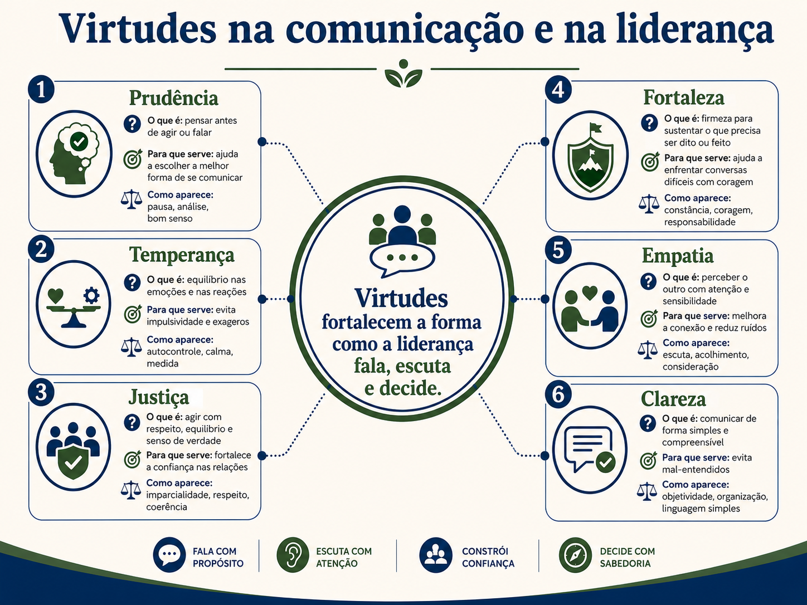

Consciência, presença e equilíbrio na liderança
Uma conversa sobre temperança, hábitos, ansiedade, rotina e a postura interna que sustenta uma comunicação melhor.
Bom dia, pessoal. Pensa em uma cena bem comum. A pessoa acorda, olha o celular antes mesmo de levantar, vê mensagem de trabalho, vê notícia ruim, lembra de uma entrega atrasada e já começa o dia com a cabeça acelerada. Ela nem chegou na reunião ainda, mas o corpo já está tenso. A voz sai mais curta. A paciência diminui. A escuta fica menor. E, sem perceber, a comunicação do dia inteiro começa contaminada por esse estado interno.
Quando falamos de comunicação estratégica, a tendência é pensar primeiro nas palavras. Só que a comunicação começa antes da frase. Ela começa no estado em que a pessoa está. Se eu estou com pressa, posso atropelar. Se estou irritada, posso responder seco. Se estou insegura, posso me defender antes de entender. Se estou ansiosa, posso cobrar de um jeito confuso. Por isso, um líder não cuida apenas do que fala. Cuida também da forma como chega para falar.
Aqui entra a temperança. Temperança é uma palavra antiga, mas a ideia é simples. É equilíbrio. É a capacidade de não ser levado pelo primeiro impulso. Não significa engolir tudo, não significa ficar passivo, não significa parecer calmo por fora e explodir por dentro. Temperança é conseguir sentir o que está acontecendo e, mesmo assim, escolher uma resposta melhor.
Não. A pessoa pode sentir raiva, frustração, medo, cansaço ou pressão. Temperança não apaga sentimento. Ela ajuda a não deixar que o sentimento tome o volante. É como dirigir na chuva. A chuva existe, o risco existe, a pista fica mais difícil. Justamente por isso, a pessoa reduz a velocidade, segura melhor o volante e presta mais atenção.
Para que serve a temperança na liderança? Serve para proteger a conversa. Um líder que reage sempre no impulso pode gerar medo. Um líder que nunca se posiciona pode gerar insegurança. Em um extremo, a equipe para de falar porque teme a reação. No outro extremo, a equipe se perde porque ninguém dá direção. A temperança ajuda a encontrar o meio: firmeza sem agressão, escuta sem omissão, clareza sem humilhação.
Como usar isso na prática? Começa com uma pausa. Uma pausa pequena mesmo. Antes de responder um e-mail atravessado, antes de escrever no chat com irritação, antes de entrar em uma conversa difícil, pare alguns segundos e pergunte: o que aconteceu de fato? O que eu estou sentindo? Qual resposta ajuda a resolver? Qual resposta só descarrega minha tensão?
A pausa não enfraquece a liderança.
A pausa impede que o impulso decida sozinho.
A temperança faz parte de um conjunto maior chamado virtudes. Virtude é um comportamento bom que a pessoa pratica até virar hábito. Não é pose. Não é discurso bonito. É repetição. Uma pessoa não se torna paciente porque leu uma frase sobre paciência. Ela se torna mais paciente quando pratica pequenas pausas em situações reais.
Hábito é aquilo que fazemos tantas vezes que começa a sair com menos esforço. Escovar os dentes é um exemplo simples. Ninguém precisa fazer uma reunião consigo mesmo para decidir se escova os dentes todos os dias. Aquilo entrou na rotina. Na comunicação, a lógica é parecida. Confirmar entendimento, respirar antes de responder, registrar combinados, perguntar antes de concluir, tudo isso pode virar hábito.
A primeira virtude que aparece aqui é a escuta ativa, que será trabalhada com mais profundidade depois. Neste momento, basta entender o começo: escutar ativamente é parar de montar a resposta enquanto o outro ainda está falando. É dar espaço para a fala chegar inteira.
Outra virtude é a humildade intelectual. Humildade intelectual é reconhecer que eu não sei tudo. Isso não diminui a autoridade de ninguém. Pelo contrário, melhora a liderança. Uma pessoa que acha que sempre sabe tudo pergunta menos, interpreta mais e aprende menos. Uma pessoa com humildade intelectual pergunta melhor, admite quando precisa de informação e toma decisões com mais realidade.
A paciência também entra aqui. Paciência não é lentidão. É capacidade de sustentar o tempo necessário para que a conversa amadureça. Tem gente que entende rápido. Tem gente que precisa de exemplo. Tem gente que precisa de segurança para falar. Um líder impaciente pode cortar a fala exatamente no ponto em que a informação mais importante apareceria.
A coragem comunicativa é outra virtude importante. Coragem comunicativa é falar o que precisa ser dito, com cuidado, sem usar o silêncio como esconderijo. Às vezes a pessoa evita uma conversa difícil para não gerar desconforto. Só que o desconforto não desaparece. Ele cresce em silêncio. Coragem comunicativa é nomear o problema sem atacar a pessoa.
Presença é estar no momento. Parece simples, mas não é. Em reuniões online, é comum a pessoa estar na chamada, no chat, no e-mail, na planilha e no celular ao mesmo tempo. O corpo está ali, mas a atenção está dividida. Quando a atenção se divide demais, a comunicação perde qualidade. A pessoa deixa passar detalhe, responde fora do ponto e depois precisa retrabalhar.
Imparcialidade é separar a minha opinião pessoal do processo. Isso é muito importante para quem lidera. Posso gostar mais de uma pessoa e menos de outra, posso ter mais afinidade com um perfil e menos com outro, mas a decisão precisa se apoiar em fatos, combinados e critérios. Quando a liderança decide por preferência, a confiança do time enfraquece.

Agora, depois do café, vamos trazer isso para o cotidiano. A evolução da comunicação não acontece apenas em grandes apresentações ou conversas decisivas. Ela acontece no jeito como respondemos uma mensagem simples, no modo como pedimos uma entrega, na forma como ouvimos uma dúvida, na paciência com uma pessoa nova no time, no cuidado de não transformar pressa em grosseria.
O cotidiano é importante porque ele é a maior parte da vida. O extraordinário aparece de vez em quando. A rotina aparece todos os dias. Se a pessoa só tenta comunicar bem em momentos especiais, ela treina pouco. Se ela usa cada conversa pequena como oportunidade de melhorar, treina muito.
Também existe uma relação forte entre ansiedade e comunicação. Ansiedade, aqui, é aquela antecipação mental de algo que ainda não aconteceu. A pessoa sofre pela reunião de amanhã, pela cobrança de sexta, pelo problema que talvez venha, pelo e-mail que talvez chegue. A cabeça sai do presente e tenta resolver tudo ao mesmo tempo.
O problema é que, quando a mente está no futuro o tempo todo, a execução do agora fica pior. A pessoa lê pela metade, responde com pressa, se irrita com facilidade e perde a escuta. Uma prática simples é voltar para a próxima tarefa. Não para a vida inteira. Não para todos os problemas da semana. Só para a próxima ação concreta.
Fazer o agora com excelência não significa ignorar planejamento. Significa cuidar daquilo que está diante de nós com atenção. Se agora é escrever uma mensagem, escreva com clareza. Se agora é ouvir uma pessoa, ouça. Se agora é registrar um combinado, registre. Quando a pessoa faz bem o próximo passo, ela reduz o volume de confusão que precisaria resolver depois.
A comunicação melhora quando a rotina melhora.
A rotina melhora quando pequenos hábitos são praticados com consistência.
Como desenvolver virtudes na prática? Primeiro, nomeie uma virtude. Não tente mudar tudo de uma vez. Escolha uma. Pode ser paciência, presença, coragem comunicativa, humildade intelectual ou imparcialidade. Depois observe os momentos em que você age contra essa virtude. Em seguida, crie uma micro-prática. Micro-prática é uma ação pequena, possível, repetível.
Se a virtude escolhida for presença, uma micro-prática pode ser deixar o celular virado para baixo durante uma conversa importante. Se for paciência, pode ser contar até três antes de interromper. Se for coragem comunicativa, pode ser marcar uma conversa que vem sendo adiada. Se for humildade intelectual, pode ser fazer uma pergunta antes de afirmar.
Por fim, peça retorno para alguém de confiança. Não precisa ser uma conversa formal. Pode ser algo simples: percebeu se eu interrompi menos hoje? Consegui explicar melhor o contexto? Eu pareci aberto para ouvir? Esse tipo de retorno ajuda a enxergar o que a pessoa sozinha nem sempre percebe.
Virtudes na liderança, use como repertório para observar comportamentos pequenos. Virtude não entra na aula como discurso moralista. Ela entra como prática diária de liderança.
Um cuidado importante é não transformar temperança em silêncio. Tem gente que acredita que ser equilibrado é não falar, não contrariar e não incomodar. Isso não é temperança, é omissão. Temperança permite falar com firmeza, mas sem perder a mão. É diferente de esconder o incômodo para parecer uma pessoa fácil de lidar. A liderança precisa saber quando acolher e quando corrigir, quando esperar e quando agir, quando conversar com calma e quando assumir uma decisão.
No ambiente de trabalho, a falta de temperança aparece de várias formas. Aparece quando a pessoa responde uma mensagem sem ler direito. Aparece quando interrompe a fala de alguém porque já acha que sabe a resposta. Aparece quando transforma uma dúvida em cobrança. Aparece quando usa uma reunião para descarregar irritação acumulada. Também aparece quando a pessoa evita tudo e deixa que o time trabalhe sem direção, só para não ter uma conversa desconfortável.
Por isso, a prática precisa ser concreta. Se eu sei que fico impaciente em reuniões longas, posso anotar minhas dúvidas e esperar a pessoa concluir. Se eu sei que fico ansiosa com mensagens sem contexto, posso perguntar antes de interpretar. Se eu sei que tenho tendência a resolver tudo sozinha, posso pausar e envolver quem precisa participar da decisão. A virtude não nasce no pensamento bonito. Ela nasce na ação pequena repetida.
Também vale perceber o impacto do começo do dia. Quando a pessoa entra no trabalho já acelerada, ela tende a carregar essa pressa para todo mundo. Às vezes a equipe recebe uma cobrança dura não porque errou, mas porque a liderança está tentando resolver internamente uma pressão que nem foi explicada. A comunicação fica mais justa quando a pessoa percebe o próprio estado antes de distribuir tensão para os outros.
Uma prática simples é separar preocupação de ação. Preocupação é aquilo que ocupa a cabeça. Ação é aquilo que pode ser feito agora. Se a preocupação é grande demais, escreva. Coloque no papel o que está acontecendo, o que depende de você, o que depende de outra pessoa e qual é o próximo passo. Essa organização reduz a chance de a ansiedade virar comunicação confusa.
A ideia de missão diária também ajuda. Missão diária não precisa ser algo grandioso. Pode ser fazer bem a conversa que está diante de você, tratar uma pessoa com respeito, entregar uma informação com clareza, pedir ajuda antes de atrasar, registrar um combinado que evitará ruído amanhã. Quando a pessoa dá valor ao cotidiano, ela para de esperar um momento especial para se desenvolver.
No começo, a prática pode parecer mecânica. Respirar antes de responder, escrever uma mensagem com mais contexto, perguntar se a pessoa entendeu, pedir retorno sobre sua postura. Tudo isso pode soar artificial por alguns dias. Mas é assim que hábito se forma. Primeiro exige esforço, depois fica mais natural. A comunicação melhora quando o comportamento deixa de depender apenas de inspiração.
A humildade intelectual merece uma atenção especial. Em liderança, algumas pessoas sentem que precisam ter resposta para tudo. Só que fingir certeza quando a situação ainda não está clara é perigoso. Uma frase madura pode ser: eu ainda não tenho todos os dados, vou verificar e retorno com uma posição. Isso protege a confiança. A equipe não precisa de uma liderança que acerta sempre. Precisa de uma liderança que lida com a verdade com responsabilidade.
A coragem comunicativa também precisa ser treinada cedo. Quanto mais uma conversa difícil é adiada, maior ela fica dentro da cabeça. Às vezes o problema real dura cinco minutos, mas a ansiedade antes da conversa dura cinco dias. Uma forma de reduzir isso é preparar a primeira frase. Não precisa preparar um discurso inteiro. Basta uma abertura respeitosa, como: quero conversar sobre um ponto que precisa de ajuste, minha intenção é tratar isso com clareza e construir um próximo passo.
A imparcialidade aparece quando existe disputa. Se duas pessoas trazem versões diferentes, a liderança pode sentir vontade de acreditar mais em quem conhece há mais tempo. Esse é um risco humano. Por isso, critério é importante. O que estava combinado? Qual evidência existe? Qual impacto foi gerado? O que precisa ser corrigido? Quando a liderança usa critérios, reduz a percepção de favoritismo.
Essas virtudes também se conectam com confiança. A equipe observa o padrão. Observa se a liderança muda de humor a cada reunião, se promete e não cumpre, se cobra dos outros o que não pratica, se ouve algumas pessoas e ignora outras. A confiança não é construída por uma frase bonita. Ela é construída pela repetição de atitudes coerentes.
Então, quando falamos de consciência pessoal, não estamos falando de uma reflexão distante da rotina. Estamos falando de uma base prática para liderar melhor. Uma pessoa que se observa melhor, reage melhor. Uma pessoa que reage melhor, comunica melhor. Uma pessoa que comunica melhor, cria menos ruído para o time.
Reflexão 5
Pense em uma situação recente em que você respondeu rápido demais. O que você sentiu, qual foi sua resposta e como poderia ter criado uma pausa antes de agir?
Ver uma possibilidade de resposta
Uma resposta possível: eu recebi uma cobrança no chat e respondi de forma curta. Eu estava me sentindo pressionado. Uma resposta melhor seria pausar, entender o pedido e responder: consigo verificar, mas preciso confirmar a prioridade com as demais entregas. Assim eu não fugiria do problema e também não reagiria com irritação.
Reflexão 6
Escolha uma virtude para praticar nos próximos dias. Escreva uma micro-prática simples para exercitar essa virtude em uma conversa real.
Ver uma possibilidade de resposta
Uma possibilidade: escolher presença. Micro-prática: em toda conversa individual, fechar as outras abas, olhar para a pessoa ou para a câmera, anotar uma frase do que foi ouvido e só depois responder. Isso transforma presença em comportamento observável.
Reflexão 7
Imagine que uma pessoa do time trouxe um problema em um momento ruim do seu dia. Escreva uma resposta com temperança, sem ignorar o problema e sem descontar sua pressão na pessoa.
Ver uma possibilidade de resposta
Uma resposta possível: obrigado por trazer isso agora. Eu estou saindo de uma reunião difícil, então quero olhar com atenção para não responder de qualquer jeito. Me dá dez minutos para organizar o contexto e já te chamo para alinharmos o melhor caminho.
Reflexão 8
Observe sua rotina e identifique um hábito de comunicação que pode estar gerando ruído. Depois escreva um pequeno ajuste.
Ver uma possibilidade de resposta
Uma possibilidade: hábito de mandar pedidos curtos demais. Ajuste: toda vez que pedir algo importante, incluir quatro pontos: o que precisa ser feito, por que importa, prazo e como confirmar entendimento.
O equilíbrio de uma liderança aparece nas conversas pequenas. Quando a pessoa treina presença, paciência, coragem, humildade e imparcialidade no cotidiano, ela chega mais preparada para os momentos difíceis. Não porque virou perfeita, mas porque criou uma base interna melhor para escolher as palavras, o tom e a atitude.